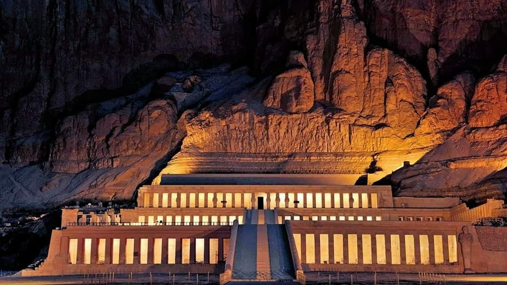
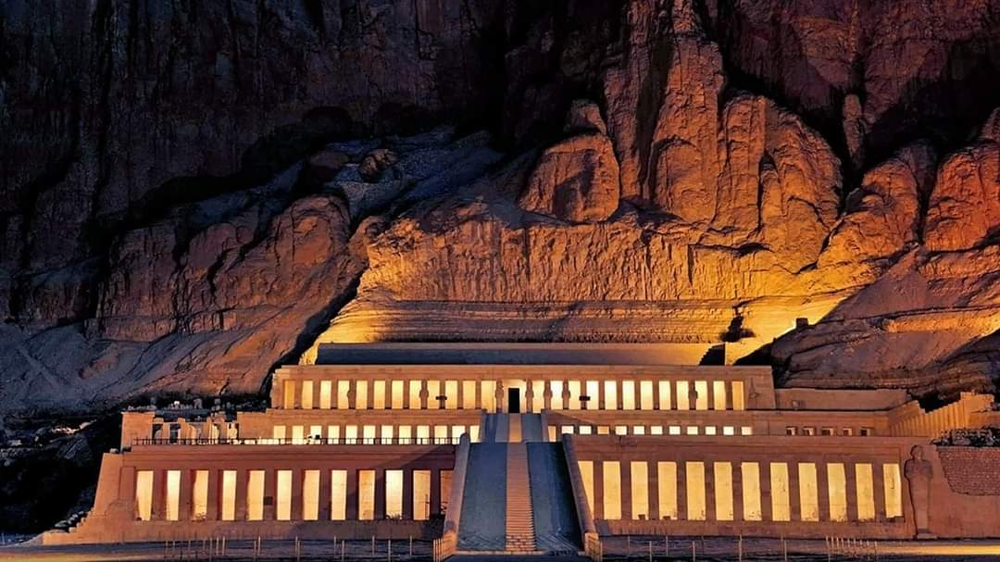

Luxor Temple A large complex of ancient Egyptian temples located on the east bank of the Nile in the city of Luxor today known as (Old Thebes). Founded in 1400 BC. Luxor Temple was built to worship Amun-Re and his wife Mut and their son Khonsu; They are the gods who are also called the Theban Trinity (The Thebes Trinity). Luxor Temple was built during the reign of the kings of the Eighteenth Dynasty and the Nineteenth Dynasty. The most important existing buildings in the temple are those built by the two kings Amenhotep III (1397-1360 BC) and Ramses II (1290-1223 BC) (who added to the temple the open courtyard, the edifice, and the two obelisks). King Tuthmosis III (1490-1436 BC) also set up booths for visitors to the Holy Trinity of Thebes, and Tutankhamun (1348-1337 BC) completed the inscriptions on its walls. The triple cabin, which had been built before during the reign of Queen Hatshepsut and King Tuthmosis III (from the Eighteenth Dynasty), was destroyed; Then it was rebuilt during the reign of King Ramses II. The temple was also called Ipet-Resit (meaning the southern sanctuary or the place of Amun-Ra). It is one of the best preserved and most beautifully built Egyptian temples, and in it the layout of the Egyptian temple is evident.

 

Reasons for founding the temple
Amenhotep III ordered the establishment of this temple for the Theban Trinity, most likely for two reasons: The first was to confirm the proportion of the god Amun himself, as his entitlement to the throne was not clear according to the Egyptian traditions, which stipulate that the pharaoh must be the son of Pharaoh and a princess of a pure lineage. His right to the throne by marrying the eldest daughter of the (former) king. Neither of the two conditions applied to Amenhotep III, as a nation was not Egyptian and his wife was not of royal lineage. That is why he confirmed his legitimacy to the throne by proving his lineage to the god Amun himself and recording his sacred birth on the walls of the famous room in the temple known as the birth room. The second is to please the priests of Amun to accept him as the legitimate pharaoh of Egypt. Therefore, this temple was dedicated to the god Amun and to one of his images, which is called “Amun-Ra-ka-Mut-F” meaning “Amun-Ra his mother’s bull” and it is the image that shows Amun-Ra as a fertility machine and for the life cycle.
Temple Description
Abulhoul Road
It is a road paved with stone slabs surrounded on both sides by statues in the form of the Sphinx representing King Nektanbo I (one of the kings of the Thirty Dynasty), who established this road during his reign. This road leads to the temple of the god Khonsu, located south of the Karnak temples. This road replaced The Road of Rams, which dates back to the reign of King Amenhotep III, as evidenced by the presence of some statues bearing the name of Amenhotep III at the southern gate of the Temple of Khonsu. The Sphinx was carved from a single block of sandstone, embodying a lion with the head of King Naqtenbo. The statue was placed on a rectangular base, dimensions 120 x 330 cm. So far, 34 statues of the Sphinx have been discovered on each side. The goal of the Sphinx Road is to determine the path of the procession, whether royal or The divine and highlight its axis. The length of the road of rams is 2.7 km, and it was built by King Nectanebo I, founder of the 30th Pharaonic dynasty (380-362 BC), in its final form, where he placed the sphinxes with rams’ heads with a memorial inscription, in which he says: “I created a beautiful road for Abu Amun Ra surrounded by walls and decorated with flowers. to sail it to Luxor Temple. He revealed the features of the road and its first statues in 1949, then the excavation work stopped until it resumed at the beginning of the second millennium, then stopped again after the 2011 protests, then work resumed again as of 2017. The complex of Karnak and Luxor temples, in addition to the pharaonic tombs in the Valley of the Kings and the Valley of the Queens, are all registered among the UNESCO World Heritage. And a wide controversy erupted in Egypt in the middle of 2020, when 4 of the ram-headed Sphinxes, which were extracted from her colleagues in Luxor, were moved to be placed in Tahrir Square in Cairo.
Festive rituals
The celebration of Opet Day was held every year with the beginning of the flood in the second half of the second month of the flood season, which corresponds to August 30, according to today’s accounts. His philosophy was that the entire universe regained its vitality, health and renewal, in preparation for the new agricultural season. The Opet Festival originated mainly in the city of Luxor around 2000 BC, in the era of the Middle Kingdom, and when Luxor became the capital of Egypt during the Middle Kingdom, its local holidays became of a national nature, including the Opet. The god Amun Ra, the Lord of the Karnak temple, was his main function as the king of the gods, and the ownership of this god, like the ownership of humans, was renewed every year, and until the ownership of the god Amun Ra on the throne of the gods was renewed, his ancestor had to give it to him, the god Amun, the god of Luxor, so he was moving The procession on Opet Day from Karnak Temple to Luxor Temple for this purpose. These rituals were taking place in the Luxor Temple, whose name was "Ibt-Resit" and translated in Arabic as the Southern Sanctuary. It means the Temple of the Sanctuary.
Opet Festival in ancient Egypt
The feast takes place in the palace of the Ebit, which is a large hall in the Luxor Temple, and in the era of the modern state, the duration of the celebration of the feast was up to 11 days during the reign of Queen Hatshepsut, and during the reign of Ramses II, the duration of the celebration was up to 22 days, but in the late era the celebrations continued for 27 days." The feast rituals start from the Karnak temple, where offerings are made to the gods, then the procession moves on the road of rams to the Luxor Temple, in which priests walk carrying 4 boats containing statues of 3 deities, Amun, Nut and Khonsu, along with a boat carrying the statue of King Amun-Ra. During the procession, the procession would stop 6 times, so that the common people could participate in the celebration rituals, before finally reaching the Luxor Temple. On the way back to the temple of Karnak, great ceremonial rites were held, where joy was spread, drinks were made and offerings were made in tents along the way, and each tent was accompanied by a band, in addition to the participation of military music and foreign bands. The lists of offerings included more than 50 species, including goose, roast duck, sacrificed cows and deer, as well as all kinds of pies and cakes made with honey. The feast procession in the era of Hatshepsut used to move on foot in the way of rams, but during the reign of King Amenhotep III it was moving in the Nile, and it also stopped 6 times on its way, and here he stresses that “the path of rams was not established only for the feast of Opet, as it was Religious processions take place every 10 days. The feast procession in the era of Hatshepsut used to move on foot in the way of rams, but during the reign of King Amenhotep III it was moving in the Nile, and it also stopped 6 times on its way, and here he stresses that “the path of rams was not established only for the feast of Opet, as it was Religious processions take place every 10 days.
Monument of King Ramses II
Built by King Ramses II, it is a huge gate with the entrance to the temple in the middle. The width of this edifice is 65 m, and its height is 24 m. The monument of King Ramses II was preceded by two obelisks of pink granite adorning the western side of the Place de la Concorde in Paris since 1836, 22.84 meters high and weighing 220 tons. It is 51 meters long and weighs 257 tons. It is characterized by a group of prominent monkeys (four monkeys) that cheer the sun at its rising and carved on its base. On these two obelisks, in hieroglyphic inscriptions, the name of King Ramses II and his titles was recorded, as he represented on its top offering the sacrifice to the god Amun. Perhaps the reason for the presence of the obelisk in front of the temple edifice, perhaps - besides being a symbol of the sun - is to announce from afar from the place of the temple, especially that these obelisks have pointed tops and were covered - most likely - with a layer of copper gilded so that they remain bright and shiny.
Right Wing (West)
The inscriptions on the facade of the edifice describe the military battles undertaken by King Ramses II against the Hittites in the fifth year of his reign. On the right (west) wing of the edifice, King Ramses A
Left wing (east)
Statue of Ramses II inside Luxor Temple. On this wing we see King Ramses II in his chariot, throwing the Hittite enemies with a barrage of arrows, and the earth is covered with dead and wounded, while the living flee in fright and leave Kadesh. There is a complete description of this battle written in the ancient Egyptian language (in hieroglyphic inscription) in a poetic style that is also found on the lower part of this edifice, and the text starts from the western (right) wing and ends on the eastern wing. On the facade of the edifice there are also four vertical slots, two slots in each wing, which were designated for placing the flagpoles, and there are also four slots at the top of the edifice designated for installing these flagpoles. There were six huge statues of King Ramses II advancing on its wall, four standing - two on each side - of which only one statue remained, which is located to the far right in relation to the interior. On both sides of the throne, a scene representing the union of the two countries was engraved, and on the side of the throne seat was a small statue of Queen Nefertari on the left side of the eastern statue, and the statue of the Princess on the right side of the western statue. On both sides of the entrance from the outside we see scenes representing King Ramses II in his various relations with the gods and goddesses. We mention the Holy Trinity of Thebes, in addition to the goddess Amunt. All of Amun, Amont, Mento and Hathor. As for behind the left wing of the eastern edifice, there are various beautiful scenes of King Ramses II and his wife in the presence of the gods and goddesses..Then they participate in the celebration of the feast of God Min
First yard
It was built by Ramses II, and its length is 57 m and its width is 51 m. Each of them is on two rows of arches, except for the building built by Hatshepsut and Tuthmosis the Third, which is located directly to the right of the interior. These cylinders (74 cylinders) are in the form of papyrus plants and end with crowns in the form of papyrus buds. They are located between the front rows in the southern half of this open courtyard. Statues of King Ramses II, including what represents him standing (11 statues), and what represents him sitting (two statues), so we see on both sides of the entrance leading to the great corridor built by Amenhotep II The walls of the spacious courtyard are decorated with various scenes representing the sacred offerings alongside scenes representing the defeated foreign peoples. One of the most important scenes that must be seen in the courtyard is the view on the southwestern wall. The view here represents the entire facade of Luxor Temple, meaning the edifice with its six statues, flags, and two obelisks. To the right of (the beholder) we see A procession led by the princes of the sons of Ramses II, followed by the fat, decorated sacrifices of cattle that will be sacrificed - most likely - as an offering to the gods (see the supplement on the western wall>
The history of the construction of the temple
The Middle Kingdom Era: It is possible that in the same area where Amenhotep III built the temple, there were remains of an ancient temple or sacred shrine dating back to the Middle Kingdom, and most likely it was during the Twelfth Dynasty. King Amenhotep III: The building of the temple in its current form on the eastern bank of the Nile on one axis from north to south is attributed to Amenhotep III of the Eighteenth Dynasty. Queen Hatshepsut and King Thutmose III: They constructed a small building consisting of three chapels dedicated to the Theban Triad. It is possible that King Ramses II reconstructed these chapels and registered his name on them. King Ramses II: King Ramses II of the nineteenth dynasty added a large edifice behind a spacious courtyard with papyrus slabs.